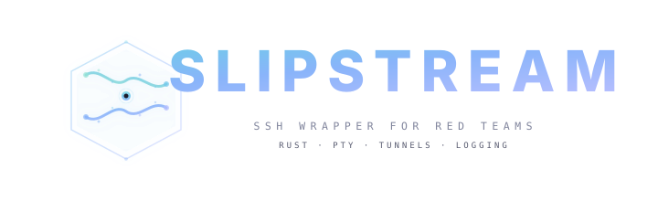

Drop-in SSH replacement with tunnel management, file transfers, passive filesystem mapping, and per-command session logging. All flags pass through. Linux + Windows targets.
Type ! inside any SSH session. Slipstream intercepts known commands and passes unknown sequences through to bash history expansion.
iptables-style syntax. SOCKS, local, and reverse forwards via ssh -O forward. Add, delete, list, flush, save, and restore per target.
File transfer with SFTP → SCP → cat → base64 fallback chain. Windows backslash paths handled automatically.
Passive filesystem mapper. Parses ls, dir, find, net user, ipconfig output. Search by pattern, show coverage, export as JSON.
Auto-grab common recon files. Linux: passwd, shadow, crontab, SUID. Windows: SAM, systeminfo, tasklist, net user.
List, switch, connect, rename, kill, and background sessions. Each session tracks tunnels, logs, and target identity.
Run commands via control socket without polluting interactive session. Add timestamped notes to target annotations.
Everything you need during a pentest without changing how you use SSH. Slipstream stays invisible while building a full picture of the target.
Real SSH forwarding via control socket. SOCKS5 proxy, local and reverse port forwards. Save and restore tunnel configurations per target.
Upload and download with SFTP → SCP → cat → base64 fallback chain. Windows paths converted automatically. Works on locked-down targets.
Passive output parsing builds a searchable map. No extra commands sent. Search by pattern, track coverage, export to JSON.
Per-command log files with timestamps. Session index for OSCP proof and engagement reporting. Every command captured automatically.
SSH host key fingerprint as primary key. Survives DHCP changes, dual-homed hosts, and lab IP reuse. Conflict detection with Archive/Keep/Ignore.
Auto-detects Linux vs Windows from SSH output. Adapts parser selection, CWD tracking, path handling, and loot targets automatically.
Full-featured against both Linux and Windows SSH targets. Runs on any system with OpenSSH 6.8+ client.
Four-layer design. PTY wraps the real ssh binary. Input interceptor routes ! commands. Output feeds mapper and logger.
Spawns the real ssh binary with ControlMaster=auto. All SSH flags, options, and config pass through unchanged. SIGWINCH/SIGHUP/SIGTERM handling.
Master socket multiplexing. Tunnel operations via ssh -O forward and ssh -O cancel. Fingerprint capture from ssh -v handshake. Orphan socket detection.
Prompt-aware input interception in cooked/raw mode. Known ! commands dispatched to handlers. Unknown sequences pass through to bash history expansion.
Per-target data keyed by fingerprint. Per-command log files with session index. Filesystem map with merge-on-add. Target annotations and tunnel configs.
Cargo build. Drop in your PATH. Connect exactly as you would with ssh.
# Clone and build $ git clone https://github.com/Real-Fruit-Snacks/Slipstream.git $ cd Slipstream # Build release binary (~2.4 MB) $ cargo build --release # Run tests $ cargo test test result: ok. 118 passed; 0 failed
# Connect — all SSH flags work $ slipstream ssh user@10.10.10.5 # SOCKS proxy on port 1080 slipstream> !tunnel add --type socks -p 1080 # Upload a file slipstream> !upload linpeas.sh /tmp/ # Grab common loot slipstream> !loot # Search the passive map slipstream> !map find *.conf # Annotate the target slipstream> !note This is the DC
Know what Slipstream hides from and what it doesn't. Honest tooling for professional operators.
! commands are local-only!exec uses control socket